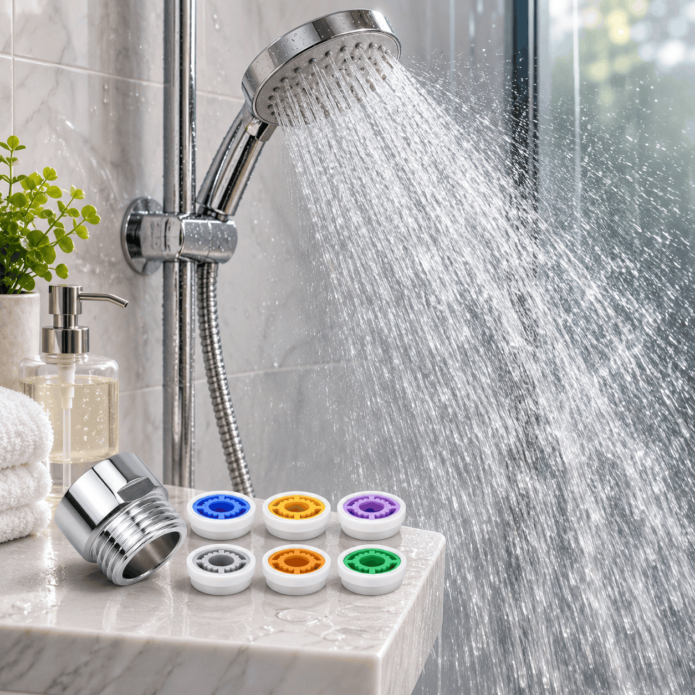

Set 6 Reductoare de Debit pentru Duș, cu Adaptor din Alamă Cromată 1,27 cm
Set cu 6 reductoare de debit interschimbabile pentru duș și adaptor din alamă cromată cu racord 1/2 inch, pentru limitarea consumului de apă.
Prețul și stocul sunt afișate conform catalogului furnizat. Confirmă disponibilitatea, cantitatea și condițiile comerciale înainte de comandă.
DETALII PRODUS
Descriere
Setul de 6 reductoare de debit pentru duș, însoțit de un adaptor din alamă cromată cu racord de 1/2 inch, reprezintă o soluție practică pentru controlul cantității de apă utilizate în timpul dușului. Conceput pentru integrarea în instalațiile sanitare compatibile, sistemul permite limitarea debitului de apă prin intermediul unor inserții speciale, fără a necesita modificări complexe ale instalației existente.
Setul combină un adaptor metalic cu 6 inserții colorate pentru reducerea debitului, oferind posibilitatea adaptării configurației în funcție de necesitățile de utilizare și de caracteristicile instalației sanitare.
1. Controlul consumului de apă
Principalul rol al produsului este limitarea debitului de apă care traversează sistemul de duș.
Prin montarea unei inserții în adaptorul compatibil, cantitatea de apă care trece prin circuit poate fi redusă, contribuind la utilizarea mai eficientă a resurselor.
Avantaje funcționale:
- Contribuie la reducerea consumului de apă în timpul dușului.
- Permite limitarea debitului fără înlocuirea întregului sistem de duș.
- Oferă o soluție mecanică, fără componente electronice.
- Poate contribui la reducerea consumului de apă caldă.
- Permite utilizarea unor inserții interschimbabile.
Economia efectivă depinde de presiunea apei, debitul inițial și caracteristicile inserției utilizate.
2. Construcție metalică și componente interschimbabile
Adaptorul este realizat din alamă cu finisaj cromat, material utilizat frecvent pentru componentele de conectare ale instalațiilor sanitare.
Suprafața metalică lucioasă oferă un aspect modern și permite integrarea vizuală alături de accesoriile sanitare cromate.
Cele 6 inserții sunt prevăzute cu elemente colorate, în nuanțe de albastru, galben, mov, gri, portocaliu și verde, pentru identificarea și diferențierea rapidă a componentelor.
Construcția modulară permite schimbarea inserției din adaptor, în funcție de compatibilitate și de debitul dorit.
3. Montaj și compatibilitate
Adaptorul dispune de conexiune filetată de 1/2 inch, dimensiune întâlnită frecvent la accesoriile pentru duș.
Instalarea presupune poziționarea inserției compatibile în adaptor și conectarea ansamblului la un racord corespunzător.
Înainte de montaj, trebuie verificate tipul filetului, sensul conexiunii și dimensiunile componentelor existente.
Sistemul funcționează exclusiv mecanic, fără baterii, alimentare electrică sau reglaje digitale.
4. Aplicații și utilizări recomandate
Setul poate fi utilizat în diferite spații dotate cu instalații de duș compatibile:
- Locuințe individuale: pentru gestionarea consumului zilnic de apă.
- Apartamente și garsoniere: soluție compactă pentru instalațiile sanitare existente.
- Hoteluri și pensiuni: accesoriu destinat optimizării consumului în băile camerelor.
- Vestiare și spații sportive: pentru dușurile utilizate frecvent.
- Spații comerciale și administrative: acolo unde este necesară limitarea debitului de apă.
5. Specificații tehnice și conținutul pachetului
- Tip produs: set reductoare de debit pentru apă.
- Destinație: instalații de duș compatibile.
- Număr reductoare: 6 bucăți.
- Adaptor inclus: 1 bucată.
- Material adaptor: alamă.
- Finisaj adaptor: cromat, argintiu.
- Dimensiune racord: 1/2 inch.
- Sistem de funcționare: reducere mecanică a debitului.
- Inserții: componente detașabile și interschimbabile.
- Culori inserții: albastru, galben, mov, gri, portocaliu și verde.
- Montaj: prin conectare filetată, în funcție de compatibilitatea instalației.
- Alimentare electrică: nu necesită.
- Întreținere: verificare și curățare periodică, în funcție de depunerile existente în apă.
- Utilizare: rezidențială și comercială.
Comandă și informații
Site-ul funcționează în regim de catalog B2B. Nu există plată online sau coș de cumpărături.
Discută pe WhatsApp →DIN ACEEAȘI CATEGORIE